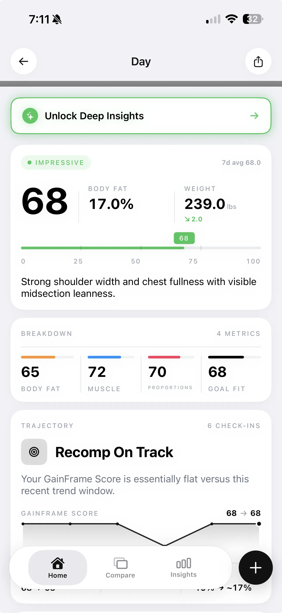

You spent last winter "bulking." You ate more, trained hard, and gained 18 lbs. Then you cut for 16 weeks, lost 14 lbs, and ended up roughly where you started — except now you're not sure if you're actually more muscular or just the same guy at a different weight.
That cycle has a name: spinning your wheels. And it happens because most lifters pick a phase based on how they feel that month rather than what their body composition numbers actually say they should do.
This guide cuts through the noise. Here is a concrete decision framework based on body fat percentage, training history, and what the scale is — and isn't — telling you.
What Each Phase Actually Means
These terms get thrown around loosely. Here's exactly what each one requires:
Cutting
Caloric deficit of 300–600 kcal/day. Goal is fat loss while preserving as much muscle as possible. Requires high protein (0.8–1g per lb of bodyweight) and progressive overload in the gym to signal the body to hold muscle. A deficit larger than 600 kcal/day accelerates muscle loss.
Bulking
Caloric surplus of 200–400 kcal/day for a lean bulk. Goal is muscle gain, accepting some fat accumulation. A "dirty bulk" (500+ kcal surplus) gains fat faster than muscle and digs a deeper hole you'll need to cut out of later. The sweet spot is slow, deliberate surplus.
Body Recomposition
Eating at or very near maintenance calories. Goal is to simultaneously lose fat and gain muscle. Slower than dedicated cut or bulk phases. Works best for specific lifter profiles (covered below). Does not work the way most people think it does — and the scale will confuse you the entire time.
The Body Fat % Decision Framework
Your current body fat percentage is the strongest predictor of which phase will produce the best results. Here's the framework, broken out by sex:
For Men
| BODY FAT % | RECOMMENDED PHASE | REASONING |
|---|---|---|
| Below 10% | Bulk | Too lean to support optimal muscle protein synthesis; hormonal environment favors growth |
| 10–14% | Lean bulk or recomp | Good starting point; recomp is viable here if training and diet are dialed in |
| 15–19% | Cut or aggressive recomp | Elevated BF% reduces insulin sensitivity and anabolic signaling; cut first is usually faster |
| Above 20% | Cut first | High body fat actively works against muscle building; cut to 15% before switching phases |
For Women
| BODY FAT % | RECOMMENDED PHASE | REASONING |
|---|---|---|
| Below 18% | Bulk | Essential fat is higher in women; below 18% can disrupt hormonal function |
| 18–24% | Lean bulk or recomp | Optimal range for recomp; body composition is favorable for simultaneous adaptation |
| 25–30% | Cut or recomp | Cut will produce faster results; recomp is slower but sustainable if deficit is uncomfortable |
| Above 30% | Cut first | Same reasoning as men — cut to a favorable range before attempting to add muscle |
Who Body Recomposition Actually Works For
Recomp is possible for almost everyone. But it's efficient for a much smaller group. Here's who gets the most out of it:
Beginners (first 6–12 months)
Novice lifters can gain muscle and lose fat simultaneously almost regardless of what they do, because the stimulus for muscle growth is so novel. This is sometimes called "newbie gains." If you've been lifting less than a year seriously, recomp is likely happening automatically — the real question is whether you're eating enough protein to support it.
Returning after a break
Muscle memory is real. When you return from a layoff of 4+ weeks, your body can rebuild lost muscle significantly faster than it built it the first time — while you're also in a fat-loss phase. This window is prime recomp territory. If you're coming back from injury or a life disruption, expect faster-than-usual results.
Intermediate lifters with 2–4 years of training
True intermediates — 2–4 years of consistent, progressive training — can recomp if they're in the right body fat range (10–15% for men, 18–24% for women) and eating precisely at maintenance. Expect slower progress than beginners. Gains of 0.5–1 lb of muscle per month while maintaining or slightly reducing body fat is a realistic outcome.
Recomp becomes increasingly difficult as you approach your genetic ceiling. Advanced lifters (5+ years, FFMI above 22 for men) will find that dedicated bulk and cut cycles produce better total results than trying to recomp. The closer you are to your natural limit, the more you need to specialize.
The Real Problem: The Scale Can't Tell You Which Phase Is Working
Here's where most lifters get stuck. They decide to recomp, eat at maintenance for 10 weeks, check the scale — it hasn't moved — and conclude nothing is happening.
That conclusion is almost certainly wrong. Recomp working perfectly looks identical on the scale to nothing happening at all. Your weight can stay exactly the same while you're simultaneously losing 3 lbs of fat and gaining 3 lbs of muscle. The number doesn't change. The body does.
The same problem applies to cutting and bulking. A "clean bulk" where you're gaining 1 lb of muscle per month and 0.5 lbs of fat looks almost identical on the scale to a sloppy bulk where you're gaining 0.5 lbs of muscle and 1 lb of fat. Both show +1.5 lbs per month. The outcomes over 12 months are completely different.
This is why tracking body fat percentage and lean mass — not just scale weight — is non-negotiable for any serious phase of training.

The chart above shows why trajectory matters more than any single weigh-in. A scale that shows 239 lbs today and 239 lbs in 8 weeks tells you nothing about whether you've built muscle or just maintained status quo. Body fat percentage tracked over the same period tells you everything.
What "Recomp Is Working" Actually Looks Like
The pattern that confirms recomp is succeeding is specific: your scale weight stays relatively flat (within ±2 lbs of water fluctuation), your estimated body fat percentage trends slightly downward, and your FFMI trends slightly upward.
That last metric — FFMI, or Fat-Free Mass Index — is the most reliable signal. It normalizes your muscle mass for height, so a 5'8" lifter and a 6'2" lifter are on the same scale. If your FFMI is rising while body fat is falling, you are recomping. If both are flat, you're maintaining. If FFMI is falling alongside body fat, you're losing muscle in a cut and need to course-correct.

An FFMI of 23 puts a natural lifter in the "Excellent" range. Getting that number from a photo-based AI estimate once a month gives you a trend signal that the scale will never provide.

GainFrame surfaces this directly: the trajectory section of a Deep Dive Report shows whether your current data pattern matches a recomp, fat loss, or muscle-gain trajectory. "Recomp On Track" means your FFMI is rising while your body fat estimate is falling or holding — the signal you're looking for.
Cut vs Bulk vs Recomp: The Decision Checklist
Run through this before committing to a phase:
| QUESTION | BULK | RECOMP | CUT |
|---|---|---|---|
| Current BF% (men) | Below 12% | 10–15% | Above 15% |
| Current BF% (women) | Below 20% | 18–25% | Above 25% |
| Training age | Any | Beginner–intermediate | Any |
| FFMI vs natural ceiling | Below 20 (men) | Any | Any |
| Returning from layoff? | No advantage | Strong advantage | No advantage |
| Calorie tracking accuracy | Moderate | High (must hit maintenance) | Moderate |
| Timeline flexibility | 6+ months | 3–6 months minimum | 8–16 weeks |
The 5-Step Framework for Picking Your Phase
- Get an accurate body fat estimate. Use a BIA scale, DEXA, or photo-based AI estimate — not a mirror. Write the number down with the date and the method. Consistency of method matters more than absolute accuracy.
- Find yourself on the framework tables above. Your body fat percentage usually gives you a clear answer. If you're in an overlap zone (10–15% for men, 18–24% for women), lean toward recomp if you've been lifting consistently for 1–3 years, and toward a lean bulk if you've been lifting longer.
- Pick one phase and commit for a minimum of 12 weeks. Switching phases after 4 weeks because the scale moved 1 lb is how people spin their wheels for years. Meaningful body composition changes take months, not weeks.
- Track the right numbers, not just bodyweight. Body fat percentage and lean mass (or FFMI) should update monthly. Scale weight should be tracked as a 7-day rolling average to strip out water fluctuation. If you're only tracking bodyweight, you're flying blind.
- Reassess at week 12. Compare your starting BF%, FFMI, and lean mass to your current numbers. Did BF% drop? Did FFMI hold or rise? Then the phase worked — decide whether to continue or transition. No change at all? Something is off with your tracking, your calories, or your training stimulus — diagnose before switching phases.
Track What Actually Changes
GainFrame estimates body fat %, FFMI, and lean mass from your progress photos — so you can tell if your bulk, cut, or recomp is actually working between weigh-ins.
Download GainFrame Free